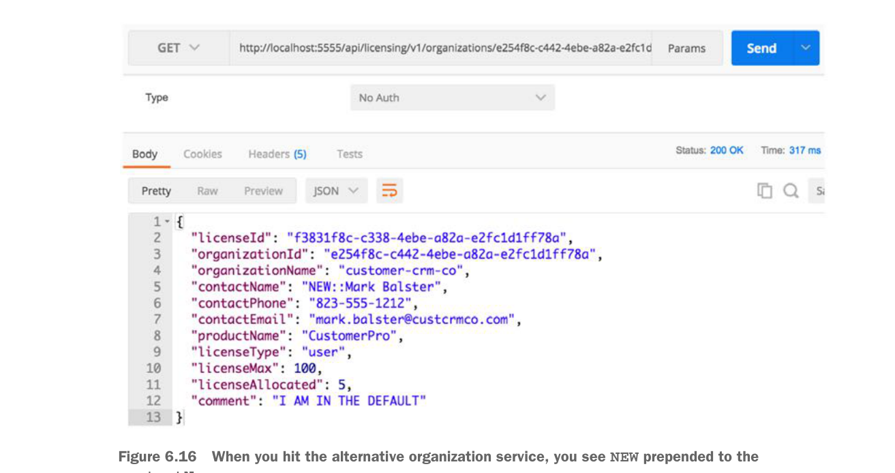

6.7.4 Tổng hợp lại
Giờ bạn đã triển khai SpecialRoutesFilter, bạn có thể thấy nó hoạt động bằng cách gọi licensing service. Như bạn có thể nhớ từ các chương trước, licensing service gọi organization service để truy xuất dữ liệu liên hệ của tổ chức.
Trong ví dụ mã nguồn, specialroutesservice có một bản ghi cơ sở dữ liệu cho organization service sẽ định tuyến các yêu cầu gọi tới organization service 50% thời gian tới organization service hiện có (cái được ánh xạ trong Zuul) và 50% thời gian tới một organization service thay thế. Tuyến organization service thay thế được trả về từ dịch vụ SpecialRoutes sẽ là http://orgservice-new và sẽ không thể truy cập trực tiếp từ Zuul. Để phân biệt hai dịch vụ, tôi đã sửa đổi organization service (các dịch vụ) để thêm tiền tố văn bản “OLD::” và “NEW::” vào tên liên hệ được trả về bởi organization service.
Nếu bạn gọi endpoint licensing service qua Zuul
http://localhost:5555/api/licensing/v1/organizations/e254f8c-c442-4ebe-a82a-
e2fc1d1ff78a/licenses/f3831f8c-c338-4ebe-a82a-e2fc1d1ff78abạn sẽ thấy contactName được trả về từ lời gọi licensing service luân phiên giữa các giá trị OLD:: và NEW::. Hình 6.16 minh họa điều này.
Bộ lọc route Zuul đòi hỏi nhiều công sức triển khai hơn so với pre- hoặc post filter, nhưng nó cũng là một trong những phần mạnh mẽ nhất của Zuul vì bạn có thể dễ dàng thêm tính thông minh vào cách các dịch vụ của bạn được định tuyến.

Khi bạn gọi organization service thay thế, bạn thấy NEW được thêm vào trước contactName.